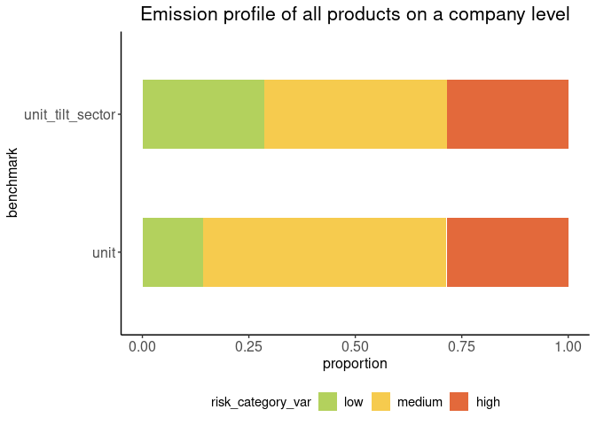
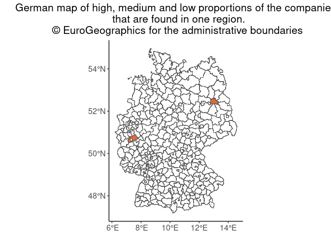

The goal of tiltPlot is to provide plots for the TILT project.
Installation
You can install the development version of tiltPlot from GitHub with:
# install.packages("pak")
pak::pak("2DegreesInvesting/tiltPlot")Example
1. Sankey Plot with financial data
financial
#> # A tibble: 264 × 23
#> bank_id amount_total company_name postcode benchmark ep_product
#> <chr> <int> <chr> <int> <chr> <chr>
#> 1 bank_a 1000 tilman 12043 all car
#> 2 bank_a 1000 tilman 12043 all tractor
#> 3 bank_a 1000 tilman 12043 all steel
#> 4 bank_a 1000 tilman 12043 all car
#> 5 bank_a 1000 tilman 12043 all tractor
#> 6 bank_a 1000 tilman 12043 all steel
#> 7 bank_a 1000 tilman 12043 all car
#> 8 bank_a 1000 tilman 12043 all tractor
#> 9 bank_a 1000 tilman 12043 all steel
#> 10 bank_a 1000 tilman 12043 all car
#> # ℹ 254 more rows
#> # ℹ 17 more variables: co2_footprint_product <dbl>, tilt_sector <chr>,
#> # tilt_subsector <chr>, isic_4digit <int>, isic_4digit_name <chr>,
#> # amount_of_distinct_products <int>, equal_weight_finance <dbl>,
#> # worst_case_finance <int>, best_case_finance <int>, emission_profile <chr>,
#> # profile_ranking <dbl>, sector_profile <chr>, scenario <chr>, year <int>,
#> # reduction_targets <dbl>, transition_risk_score <dbl>, …
fin <- financial
benchmark <- "tilt_sector"
mode <- "equal_weight"
plot_sankey(fin, with_company = TRUE, benchmark = "tilt_sector", mode = "equal_weight") +
ggtitle(
"Sankey Plot",
paste("Stratified by the amount of loan by the bank, with the", mode, "mode", "and benchmark", benchmark)
)
You can also choose to have the plot without the company node.
plot_sankey(fin, with_company = FALSE, benchmark = "tilt_sector", mode = "equal_weight")
Finally, the user can choose different modes to plot the Sankey plot with financial data available.
plot_sankey(fin, with_company = FALSE, benchmark = "tilt_sector", mode = "best_case")
2. Emission profile plots with financial data
financial
#> # A tibble: 264 × 23
#> bank_id amount_total company_name postcode benchmark ep_product
#> <chr> <int> <chr> <int> <chr> <chr>
#> 1 bank_a 1000 tilman 12043 all car
#> 2 bank_a 1000 tilman 12043 all tractor
#> 3 bank_a 1000 tilman 12043 all steel
#> 4 bank_a 1000 tilman 12043 all car
#> 5 bank_a 1000 tilman 12043 all tractor
#> 6 bank_a 1000 tilman 12043 all steel
#> 7 bank_a 1000 tilman 12043 all car
#> 8 bank_a 1000 tilman 12043 all tractor
#> 9 bank_a 1000 tilman 12043 all steel
#> 10 bank_a 1000 tilman 12043 all car
#> # ℹ 254 more rows
#> # ℹ 17 more variables: co2_footprint_product <dbl>, tilt_sector <chr>,
#> # tilt_subsector <chr>, isic_4digit <int>, isic_4digit_name <chr>,
#> # amount_of_distinct_products <int>, equal_weight_finance <dbl>,
#> # worst_case_finance <int>, best_case_finance <int>, emission_profile <chr>,
#> # profile_ranking <dbl>, sector_profile <chr>, scenario <chr>, year <int>,
#> # reduction_targets <dbl>, transition_risk_score <dbl>, …On a company level:
fin <- financial
benchmarks <- c("all", "unit")
fin |>
filter(company_name == "tilman") |>
bar_plot_emission_profile_financial(benchmarks, mode = "equal_weight") +
labs(title = "Emission profile of all products on a company level, on an equal
weight financial mode")
On a portfolio level:
bar_plot_emission_profile_financial(fin, benchmarks, mode = "equal_weight") +
labs(title = "Emission profile of all products on a portfolio level, on an equal
weight financial mode")
3. Emission profile plots without financial data
without_financial
#> # A tibble: 252 × 35
#> companies_id country postcode main_activity ep_product activity_uuid_produc…¹
#> <chr> <chr> <int> <chr> <chr> <chr>
#> 1 %ef%bb%bfma… germany 12043 wholesaler surface c… a62eb0d6-9120-541c-97…
#> 2 %ef%bb%bfma… germany 12043 wholesaler surface c… a62eb0d6-9120-541c-97…
#> 3 %ef%bb%bfma… germany 12043 wholesaler surface c… a62eb0d6-9120-541c-97…
#> 4 %ef%bb%bfma… germany 12043 wholesaler surface c… a62eb0d6-9120-541c-97…
#> 5 %ef%bb%bfma… germany 12043 wholesaler surface c… a62eb0d6-9120-541c-97…
#> 6 %ef%bb%bfma… germany 12043 wholesaler surface c… a62eb0d6-9120-541c-97…
#> 7 %ef%bb%bfma… germany 12043 wholesaler surface c… a62eb0d6-9120-541c-97…
#> 8 %ef%bb%bfma… germany 12043 wholesaler surface c… a62eb0d6-9120-541c-97…
#> 9 %ef%bb%bfma… germany 12043 wholesaler hand tool… 7c082396-1f14-5674-86…
#> 10 %ef%bb%bfma… germany 12043 wholesaler hand tool… 7c082396-1f14-5674-86…
#> # ℹ 242 more rows
#> # ℹ abbreviated name: ¹activity_uuid_product_uuid
#> # ℹ 29 more variables: matched_activity_name <chr>,
#> # matched_reference_product <chr>, unit <chr>, co2e_lower <dbl>,
#> # co2e_upper <dbl>, emission_profile <chr>, benchmark <chr>,
#> # profile_ranking <dbl>, tilt_sector <chr>, tilt_subsector <chr>,
#> # sector_profile <chr>, scenario <chr>, year <int>, …Plot on a company level. The user can choose any number of benchmark to be plotted.
no_fin <- without_financial
benchmarks <- c("unit", "unit_tilt_sector")
company_name <- no_fin$companies_id[1]
no_fin |>
filter(companies_id == company_name) |>
bar_plot_emission_profile(benchmarks, mode = "equal_weight", scenario = "1.5C RPS", year = 2030) +
labs(title = "Emission profile of all products on a company level")
Plot on a portfolio level.
bar_plot_emission_profile(no_fin, benchmarks, mode = "equal_weight", scenario = "1.5C RPS", year = 2030) +
labs(title = "Emission profile of all products on a portfolio level")
4. Scatter plot of the emission profiles and transition risk scores, with financial data
fin <- financial
scenario <- "IPR"
year <- 2030
benchmarks <- c("all", "unit")
mode <- "best_case"
scatter_plot_financial(fin,
benchmarks = benchmarks,
mode = mode,
scenario = scenario,
year = year
)
5. Create a German map with risk categories color gradient, without financial
Different modes can be chosen: “equal_weight”, “worst_case” and “best_case”. If nothing is chosen, equal_weight the default mode.
no_fin <- without_financial
map_region_risk(no_fin, "DE", benchmark = "unit_tilt_sector", mode = "worst_case", scenario = "NZ 2050", year = 2030) +
labs(title = "German map of high, medium and low proportions of the companies
that are found in one region.
© EuroGeographics for the administrative boundaries ")
#> Extracting data using giscoR package, please report issues on https://github.com/rOpenGov/giscoR/issues